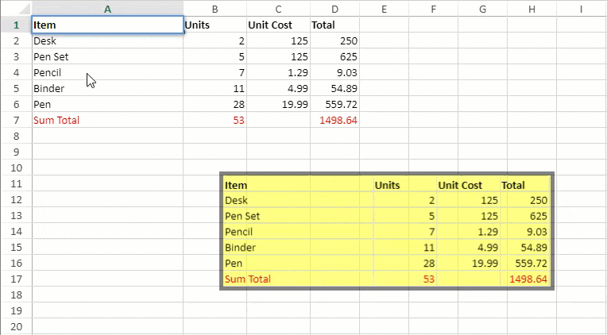
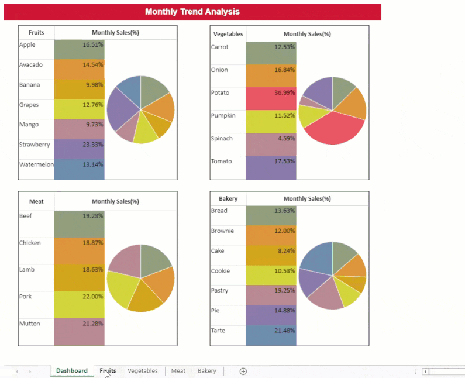

Camera shape, as the name suggests, is a mirror image of a referenced area in a spreadsheet. It is a dynamic image, meaning that any change in the referenced region is reflected in the image as well.
Camera shapes can be moved, resized, rotated and supported for Excel I/O. They can also be grouped or ungrouped with other shapes and copy pasted from one sheet to another.

Note: When a camera shape containing picture, shape, or chart is exported to Excel, the SpreadJS unsupported objects (pictures, shapes, or charts) are displayed in Excel.
Consider an example where the sales data of different products across a supermarket is maintained to analyze the sales trends. The data for different product categories like Fruits, Vegetables, Bakery, Meat etc. is maintained in different worksheets of a spreadsheet.
The summarized monthly sales data is displayed on a consolidated 'Dashboard' worksheet which shows camera shapes for the products' sales across different product categories. Any change made to the sales data is reflected in the 'Dashboard' sheet as well.

| JavaScript |
Copy Code
|
|---|---|
// Get the sheets var sheetDashboard = spread.sheets[0]; var sheet1 = spread.sheets[1]; var sheet2 = spread.sheets[2]; var sheet3 = spread.sheets[3]; var sheet4 = spread.sheets[4]; // Set sheet names sheetDashboard.name("Dashboard"); sheet1.name("Fruits"); sheet2.name("Vegetables"); sheet3.name("Meat"); sheet4.name("Bakery"); // Set sheetAreaOffset option sheetDashboard.options.sheetAreaOffset = { left: 1, top: 1 }; // Hide gridlines sheetDashboard.options.gridline = { showVerticalGridline: false, showHorizontalGridline: false }; // Hide column & row headers sheetDashboard.options.colHeaderVisible = false; sheetDashboard.options.rowHeaderVisible = false; // Clear the cell selection and change selectionBordercolor sheetDashboard.clearSelection(); sheetDashboard.options.selectionBorderColor = "transparent"; // Add camera shapes in Dashboard sheet var CameraShape1 = sheetDashboard.shapes.addCameraShape("CameraShape1", "Fruits!A1:C8", 30, 45, 340, 330); var CameraShape2 = sheetDashboard.shapes.addCameraShape("CameraShape2", "Vegetables!A1:C7", 440, 45, 340, 330); var CameraShape3 = sheetDashboard.shapes.addCameraShape("CameraShape3", "Meat!A1:C6", 30, 400, 340, 330); var CameraShape4 = sheetDashboard.shapes.addCameraShape("CameraShape4", "Bakery!A1:C8", 440, 400, 340, 330); |
|